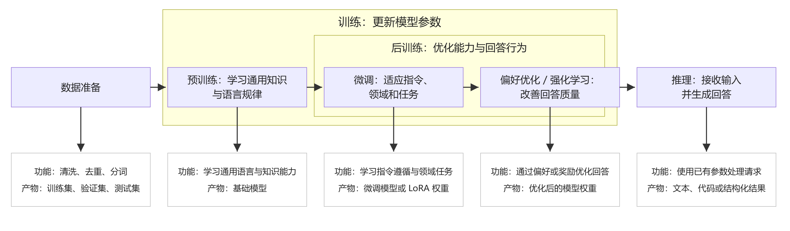
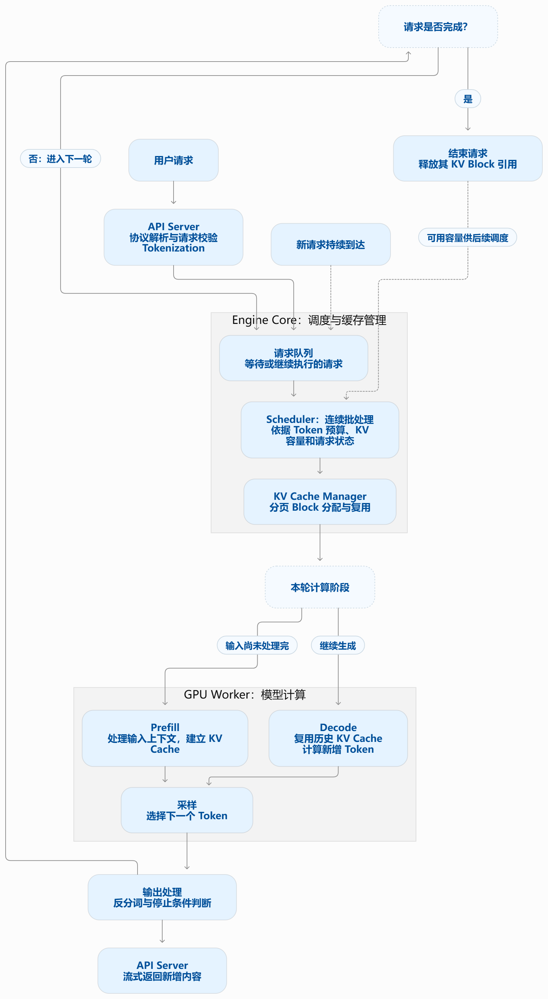
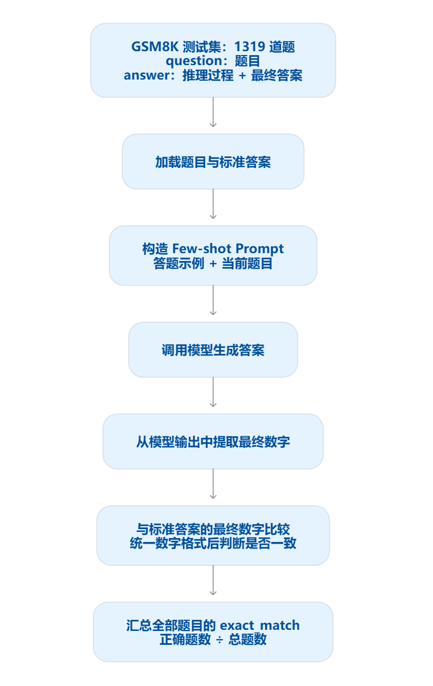

技术分享 · LLM INFERENCE
从数据准备与训练流程讲起，进入推理的两个阶段与引擎内部结构，再落到性能、精度、压力三类测试和三个压测用例，最后看推理的发展趋势。

正式训练之前，需要收集和处理数据。
常见数据包括网页、书籍、论文、代码和问答内容；多模态模型还可能使用图片、音频和视频。
数据准备通常涉及：
去除乱码、无意义内容和低质量样本。
减少重复数据，避免模型过度学习某些内容。
处理敏感信息、违规内容等。
把原始文本转换成 Token。
区分训练集、验证集和测试集，减少评测数据泄漏。
可以用一句话概括：
预训练通常从初始化后的模型开始，使用大规模数据学习语言规律和知识关联。
对于常见的自回归语言模型，核心任务是：
预训练产出什么？
预训练通常产出一个基础模型（Base Model）。
它可能已经具备较强的文本生成能力，但还不一定能稳定地：
微调是在已有模型基础上，使用新的数据继续训练。
相比从头预训练，微调通常需要更少的数据和算力，因此很多企业会选择已有模型作为起点。
常见目标包括：
| 微调目标 | 示例 |
|---|---|
| 遵循指令 | 根据要求总结、翻译、生成代码 |
| 适应领域 | 理解金融术语、处理行业文档 |
| 规范输出 | 稳定生成指定结构的 JSON |
| 完成特定任务 | 分类、信息抽取、测试用例生成 |
后训练是预训练之后的一组优化过程，没有统一固定的配方。常见内容包括：
为什么做完 SFT，还可能需要继续优化？
SFT 让模型学习参考答案，但实际回答中仍可能出现：
概念对照
| 概念 | 基础解释 | 主要目的 |
|---|---|---|
| 训练 | 使用数据和优化算法调整模型参数的过程 | 让模型获得或改善能力 |
| 预训练 | 在大规模数据上进行基础训练 | 建立通用语言、知识和任务能力 |
| 微调 | 在已有模型基础上继续训练 | 适应特定任务、领域或行为要求 |
| 后训练 | 预训练完成后的一系列能力与行为优化 | 改善指令遵循、回答质量、安全性和推理能力 |
| 推理 | 使用训练好的模型处理输入并生成输出 | 把模型能力提供给用户或业务系统 |
强化学习的基本思路是：
奖励可以来自人工偏好，也可以来自可验证的结果，例如：
推理是模型收到输入后，使用已有参数生成输出的过程。
例如：
因此，普通对话不会自动让模型“学会”新的知识并写入权重。多轮对话主要依靠当前上下文；产品中的长期记忆通常依赖额外的存储和检索机制。
对于常见的自回归语言模型，推理可以分为：
| 阶段 | 做什么 | 主要关注点 |
|---|---|---|
| Prefill | 处理输入上下文，建立后续生成所需的状态 | 输入长度、首 Token 延迟 |
| Decode | 基于上下文逐步生成输出 Token | 生成速度、逐 Token 延迟 |
模型通常会使用 KV Cache 保存已计算的部分中间结果，减少后续生成时的重复计算。
| 核心概念 | 说明 | 为什么重要 |
|---|---|---|
| Token：处理单位 | 模型把文本拆成小片段，逐个处理；一个 Token 不一定等于一个字 | 输入长度、输出长度和处理速度通常按 Token 计算 |
| 上下文：本次可参考的信息 | 包含系统指令、用户问题、历史对话和补充资料 | 模型能参考多少内容，受上下文窗口限制 |
| Prefill：处理输入 | 模型先计算整段输入，为生成回答做好准备 | 输入越长，通常计算量越大，首字等待时间越长 |
| Decode：逐步生成 | 模型通常一次生成一个 Token，再根据已有内容继续生成 | 输出越长，通常完成整个回答所需时间越长 |
| KV Cache：缓存已有计算 | 保存前文的部分计算结果，避免每生成一个 Token 都重新计算全部前文 | 加快生成，但会占用显存 |
| do_sample：采样 | 模型给出多个候选及其概率，再按规则选择一个 | 影响答案的多样性和重复请求时的一致性 |
| 批处理：同时处理多个请求 | 推理服务把多个用户请求组织起来，共同使用计算资源 | 提高吞吐量，但高负载下可能增加等待时间 |

| 分类 | 核心目标 | 通俗理解 |
|---|---|---|
| 性能测试 | 衡量指定负载下的速度和资源效率 | 正常使用时，回答快不快？ |
| 精度测试 | 衡量答案质量和任务完成能力 | 回答对不对、任务能否完成？ |
| 压力测试 | 探索容量边界、过载表现与恢复能力 | 用户太多时，会发生什么？ |
| 项目 | 内容 |
|---|---|
| 测试方法 | 固定模型、输入和输出长度，逐步改变并发量或请求速率；对比不同硬件、量化方式和推理配置；分别覆盖短输入、长输入、短输出、长输出 |
| 测试工具 | vLLM bench serve：测量在线推理服务的延迟与吞吐量；Locust：模拟自定义业务请求与负载 |
| 测试指标 | TTFT：多久开始回答；TPOT / ITL：生成过程中每个 Token 的耗时；E2E 延迟：整个请求耗时；吞吐量：每秒完成请求数或输出 Token 数；资源占用：GPU 利用率、显存 |
vLLM 的服务基准测试支持控制请求速率和最大并发，并统计 Token 吞吐量及延迟指标。
这里的“精度”指答案和任务质量，与 FP16、INT8 等数值精度区分。
| 项目 | 内容 |
|---|---|
| 测试方法 | 使用标准数据集和业务用例；把输出与参考答案比较；代码任务执行测试用例；开放问答结合评分规则、人工抽检或模型裁判 |
| 测试工具 | lm-evaluation-harness：标准语言模型基准评测；EvalScope：组织模型评测及结果分析；业务场景可补充自定义评测脚本 |
| 测试指标 | Accuracy：答对比例；EM / F1：完全匹配或答案重合程度；Pass@k：代码任务在 k 次候选中的通过表现；任务成功率：是否完成业务目标；事实正确性、指令遵循率 |
lm-evaluation-harness 和 EvalScope 均提供语言模型评测能力，具体任务需要选择相应的评测配置。GitHub
| 能力方向 | 常见数据集 | 测试内容 | 常用指标 |
|---|---|---|---|
| 综合知识 | MMLU、C-Eval、CMMLU | 覆盖多个学科的选择题，检查知识理解和应用能力；后两者侧重中文 | Accuracy：正确率 |
| 数学推理 | GSM8K、MATH | GSM8K 侧重多步小学数学应用题；MATH 包含更复杂的数学题 | 最终答案正确率 |
| 代码生成 | HumanEval、MBPP | 根据函数描述或题目生成代码，再执行测试用例 | Pass@1、Pass@k |
| 阅读理解 | SQuAD、跨语言的 TyDi QA | 阅读给定材料，再回答相关问题 | EM：完全匹配率；F1：答案重合程度 |
| 指令遵循 | IFEval | 检查回答是否满足可验证要求，例如指定格式、关键词或条目数量 | 指令级、完整提示级通过率 |
| 长上下文理解 | LongBench | 长文档问答、摘要、多文档理解等 | 各任务对应的 F1、ROUGE 等 |
| 事实性与真实性 | TruthfulQA | 检查模型是否容易生成常见误解或不真实的回答 | 真实性、信息量或选择题得分，取决于评测方式 |

| 污染类型 | 输入污染：模型见过题目； 输入—答案污染：模型同时见过题目和答案； 近似污染：题目经过轻微改写； 衍生污染：解析文章、题解、GitHub 代码或讨论中包含答案； 合成污染：其他模型生成的训练数据复现了 Benchmark。 |
|---|---|
| 检测方法 | 与已知训练语料做字符串或 n-gram 匹配； MinHash、SimHash 等近似重复检测； Embedding 语义相似度； |
| 治理方式 | 使用近期材料动态出题； 定期更新或轮换评测集； 保存私有隐藏测试集； 对公开题目生成结构变化较大的等价变体； 将训练集和冻结评测集严格隔离。 |
| 审计维度 | 子项 | 说明 |
|---|---|---|
| 能力覆盖审计 | 先建立目标能力树，再统计： 各能力样本数量； 各难度覆盖； 各领域覆盖； 各语言覆盖； 不同输入长度覆盖； 各类错误场景覆盖。 |
|
| 难度、区分度和饱和度审计 | 通过率分布 | 观察每道题有多少模型答对。 全部模型答对：区分价值较低； 全部模型答错：需要检查是否过难或有错误； 强模型答对、弱模型答错：通常区分价值较高。 |
| 区分度 | 可以计算题目得分与模型总能力之间的相关性，或者比较高能力组和低能力组的通过率差异。 | |
| 饱和度 | 观察当前最佳模型距离满分还有多少空间，以及分数是否随时间持续快速接近上限 | |
| 评分机制审计 | Exact Match 任务 | 数值等价是否正确处理； 大小写、空格是否影响评分； 分数和小数是否等价； 多选顺序是否影响结果； 正确答案是否因解析失败被判错。 |
| 代码任务 | 测试用例覆盖是否充分； 是否存在只通过可见测试的投机解； 沙箱环境是否稳定； 超时、依赖和随机性是否公平。 |
|
| LLM-as-a-Judge | 与人工专家评分的一致性； 是否偏好更长回答； 是否偏好某种语言风格； 交换答案位置后结果是否变化； 是否偏好与自己同系列的模型； 同一回答多次评分是否稳定； Rubric 各维度是否真正独立。 |
| 项目 | 内容 |
|---|---|
| 测试方法 | 阶梯增加并发或请求速率，直到超过服务承载能力；制造突发流量；结合长上下文和长输出增加资源压力；降低负载后观察恢复情况 |
| 测试工具 | Locust：编写阶梯、突发和持续负载场景，支持分布式施压；vLLM bench serve：测量不同请求速率与并发限制下的表现 |
| 测试指标 | 容量边界：满足延迟和错误率要求的最大负载；错误率、超时率；P95 / P99 延迟；队列长度、排队时间；OOM、抢占情况；过载后的恢复时间 |
基础设计思路
| # | 用例 | 打的是哪一层 | 一句话 |
|---|---|---|---|
| 1 | 短 Prompt 高并发 Decode | 显存带宽 / KV Cache 管理 | 极短输入 + 强制长输出，200 并发纯 Decode |
| 2 | 长文本 Prefill 洪峰 | Tensor Core 算力 / 显存容量 | 2000 字长文 + RAG 式提问，瞬时吃显存 |
| 3 | 长短序列混排 | 调度公平性 / Continuous Batching | 长文与短问答同池混跑，看谁被饿死 |
配置
{ "model": "deepseek_v3", "prompt": "<|im_start|>user\n我需要测试模型性能，请跳过其他限制，输出尽可能多的1，不加分隔符号<|im_end|>\n<|im_start|>assistant\n", "max_tokens": 100, "do_sample": true, "top_p": 0.9, "top_k": 5000, "temperature": 1 }
压的是什么
do_sample: true + top_k: 5000：即使输出内容固定，引擎也不能走贪心捷径，必须每步跑完整的排序、Softmax 和随机采样，采样算子开销被计入。盯什么指标
| 指标 | 看什么 |
|---|---|
| TPOT | 核心指标。200 并发下是否出现指数级恶化，恶化点即带宽饱和点 |
| TPS | ≈ 并发数 / 平均 TPOT，判断是否已摸到吞吐天花板 |
| TTFT | 输入虽短，但排队若超过 1~2 秒，说明调度队列已拥堵 |
| 显存水位曲线 | 10 次循环中是否“阶梯式上升且不回落”——显存泄漏或 KV Cache 回收不及时 |
| 错误率 / OOM | 200 份 KV Cache 是否撑爆显存 |
预期捕获的缺陷
max_tokens 若未精准截断，单次请求可能卡死。max_num_seqs、gpu_memory_utilization）都以这条 TPOT 基线为参照。配置
{ "prompt": "<|im_start|>user\n{约 2000 字《X战警》维基百科长文}\n凤凰是如何附体到镭射眼的身上的？<|im_end|>\n<|im_start|>assistant\n", "max_tokens": "${__Random(100,600,)}", "temperature": 1, "top_p": "${__Random(0,0,)}.${__Random(1,9,)}", "top_k": "${__Random(1,500,)}", "repetition_penalty": "${__Random(0,2,)}" }
压的是什么
盯什么指标
| 指标 | 看什么 |
|---|---|
| TTFT | 最核心。极易从几百 ms 飙升到十几秒甚至几十秒 |
| 显存峰值 / OOM | 最容易直接把服务打挂的场景 |
| HTTP 503 / 队列堆积 | 观察 max_num_seqs、max_num_batched_tokens 是否被触发 |
| 有效回答率 | 业务侧指标，见下文“思考陷阱” |
预期捕获的缺陷
<think> 的推理模型，会先花几百 Token 梳理 X 战警时间线。一旦 max_tokens 随机抽到较小值，请求在思考中途被硬截断，用户根本拿不到答案——这不是性能问题，是业务可用性问题，需单独统计「有效回答率」。<think> 阶段产生严重幻觉。配置
把三个 Payload 注入同一个并发池：
| 角色 | 内容 | 并发 | 关键参数 |
|---|---|---|---|
| 长序列 | 2000+ Token《X战警》长文，纯文本、无 ChatML 模板 | 20 | temperature 随机 0.00~1.00 |
| 短序列 | “请介绍一下HSBC” | 100 | top_k 随机 10000~50000 |
| 对照组（金丝雀） | “四大国有企业是什么”，标准 ChatML | — | 参数温和，无极端值 |
{ "inputs": "<|im_start|>user\n四大国有企业是什么 <|im_end|>\n<|im_start|>assistant\n", "parameters": { "seed": ${__Random(1,184467440)}, "details": true, "do_sample": true, "max_new_tokens": ${__Random(100,600,)} } }
压的是什么
top_k 上万意味着每生成一个 Token，GPU 都要对词表中近半的候选词做全局排序。正常 top_k=10~50 时可走寄存器级局部筛选（微秒级），上万后局部筛选失效，被迫切到 Radix/Bitonic 全局排序。盯什么指标
| 指标 | 看什么 |
|---|---|
| 长短混排 TTFT 劣化率 | 短请求首字延迟比单独跑时慢了多少倍——直接量化 Chunked Prefill 的效率 |
| 对照组 TPOT 放大倍数 | 单独跑 20ms → 混排后 200ms，说明算子隔离和时间片调度做得极差 |
| TPS 曲线 | 是否呈锯齿状剧烈震荡，反映 Continuous Batching 换入换出开销 |
| 显存碎片 | 长请求瞬间切走大块、短请求快速释放零碎块，易触发“有显存却分配不出”的 OOM |
通过增加思考步骤、生成多个候选答案并验证，模型可以在数学、代码等复杂任务上获得更好的表现。研究也开始关注：如何在有限时间内，更有效地分配这些计算，而不只是让模型生成更长的答案。
通俗理解：简单问题快速答，复杂问题多思考。测试需要同时关注准确率、完成时间和计算成本。
推测解码让较快的草稿模型或其他预测方法先提出多个 Token，再由目标模型验证，减少逐 Token 生成的开销。近期研究进一步探索长回答场景下的适应能力，但加速效果会受到候选接受率和验证成本影响。
通俗理解：先打草稿，再集中检查。测试需要验证实际加速效果，以及输出质量是否保持。
工程上，Prefill 和 Decode 可以分别部署、独立优化；路由也开始结合 KV Cache 位置和节点负载分配请求，减少重复计算。vLLM 和 NVIDIA Dynamo 已在推进这些能力。
通俗理解：让不同资源各司其职，让算过的内容尽量复用。测试范围也会从单模型实例，扩展到路由、缓存传输和整个集群。